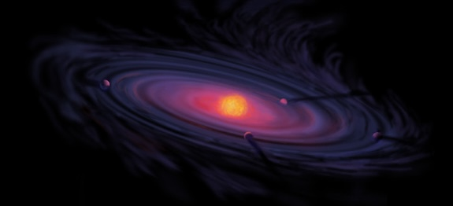
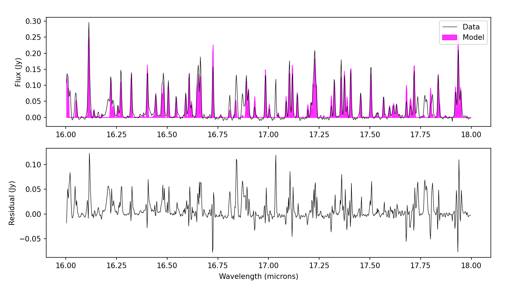

Protoplanetary Disk Chemistry

Since starting work as a Caltech postdoctoral scholar in late 2024, I have been working to analyze near-IR Keck/NIRSPEC and JWST/MIRI spectra of protoplanetary disks. These data are windows into the innermost regions of protoplanetary disks, where (primarily) terrestrial planet formation takes place. I utilize slab model software -- primarily InfraRed Isothermal Slabs (iris) and slabspec -- in concert with MC and Bayesian inference methods to calculate the likeliest disk properties, namely inner radii, temperature, gas column density, and emitting area. The degeneracy of these properties with each other necessitate careful methods to isolate certain parameters (e.g., the innermost radius of the disk can be extracted more or less independently from the wings of high-J CO lines).
Shifting my work focus from spending 100% of my time to planetary science to splitting it between two different subfields has been a rewarding but challenging learning opportunity. Each class of projects necessitate a different sense of scale, different kinds of data, and while the physics is the same, Jupiter's visible spectrum is dominated by very different processes than the inner region of protoplanetary disks and so requires different modeling methods. However, I have learned to efficiently shift my focus between subfields as needed and enjoy explaining my disk work to my planetary colleagues, and vice versa.

An example MIRI spectrum of disk CI Tau, and the retrieved model spectrum in pink. This particular model was run and residuals calculated in order to identify lines with higher non-LTE effects that would necessitate corrections.